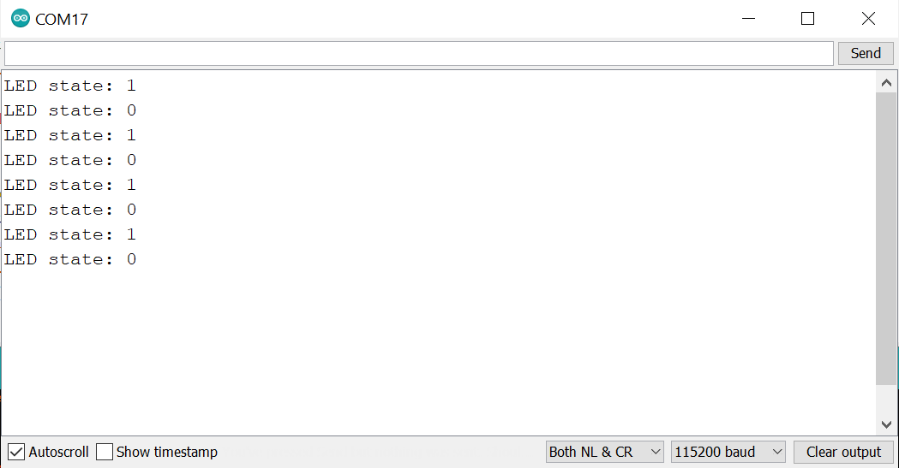
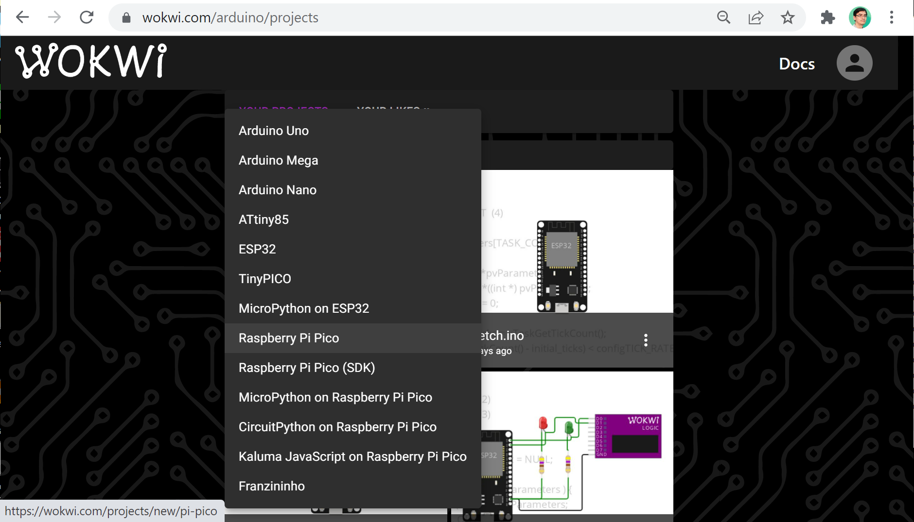

การเขียนโปรแกรมด้วย Arduino Pico Core สำหรับไมโครคอนโทรลเลอร์ Raspberry Pi Pico#
▷ การติดตั้งและใช้งาน Arduino Pico Core#
บอร์ดไมโครคอนโทรลเลอร์ Raspberry Pi Pico หรือบอร์ดอื่นที่ใช้ชิป Raspberry Pi RP2040 (Dual Core Cortex M0+, 133MHz, 264 KB SRAM) สามารถนำมาใช้ในการฝึกเขียนโปรแกรมสำหรับงานด้านระบบสมองกลฝังตัว (Embedded Systems) ด้วยภาษา C/C++ ร่วมกับซอฟต์แวร์ Arduino IDE ผู้ใช้งานเขียนโค้ดโดยใช้คำสั่งต่าง ๆ ของ Arduino API ได้เช่นกัน
บทความนี้นำเสนอขั้นตอนการใช้งาน Arduino Pico Core ที่ได้มีการพัฒนาโดย Earle F. Philhower และไม่ใช่ Arduino Core for Mbed OS - RP2040 แม้ว่าทั้งสองตัวเลือกสามารถนำมาใช้ในการเขียนโค้ด Arduino Sketch ได้เช่นกัน แต่มีพื้นฐานซอฟต์แวร์ที่ใช้งานแตกต่างกัน

รูป: Arduino Pico Core - Github repo
ลองมาดูตัวอย่างโค้ดบางส่วนของ Arduino Pico Core ที่สร้างฟังก์ชันที่เป็นคำสั่งพื้นฐานของ Arduino API
อย่างเช่น pinMode() และ digitalWrite() เป็นต้น (อยู่ในไฟล์ /cores/rp2040/wiring_digital.cpp)
จากโค้ดตัวอย่างจะเห็นได้ว่า มีการใช้คำสั่งในกลุ่ม GPIO ของ Pico C/C++ SDK เช่น
gpio_init()เริ่มต้นใช้งานขา GPIO ตามหมายเลขขาที่ระบุ (GPIO number)gpio_pull_up()เปิดใช้งานตัวต้านทานภายในแบบ Pullup ที่ขา GPIOgpio_pull_down()เปิดใช้งานตัวต้านทานภายในแบบ Pulldown ที่ขา GPIOgpio_disable_pull()ปิดการใช้งานตัวต้านทานภายในทั้งสองแบบgpio_set_dir()กำหนดทิศทางขา (GPIO_OUT=1,GPIO_IN=0)gpio_set_function()กำหนดฟังก์ชันการทำงานของขา GPIO (จำแนกเป็น F1..F9) ยกตัวอย่างเช่นGPIO_FUNC_SIOเมื่อต้องการเข้าถึงรีจิสเตอร์ของซีพียูโดยตรงในส่วนที่เกี่ยวข้องกับ Single-cycle I/O PortsGPIO_FUNC_UART(F2) เมื่อใช้งานขาสำหรับ UART RX/TXGPIO_FUNC_PWM(F4) เมื่อใช้งานขาสำหรับสัญญาณเอาต์พุต PWMGPIO_FUNC_I2C(F3) เมื่อใช้งานขาสำหรับบัส I2CGPIO_FUNC_SPI(F1) เมื่อใช้งานขาสำหรับบัส SPIGPIO_FUNC_USB(F9) เมื่อใช้งานขาสำหรับ USBGPIO_FUNC_CLK(F8) เมื่อใช้งานขาสำหรับ Clock In/OutGPIO_FUNC_GPCK(F6) เมื่อใช้งานขาสำหรับ PIO0GPIO_FUNC_PI1(F7) เมื่อใช้งานขาสำหรับ PIO0
gpio_put()กำหนดค่าให้ขา GPIO เป็น 0 หรือ 1gpio_get()อ่านค่าจากขา GPIO ได้ค่าเป็น 0 (LOW) หรือ ไม่เท่ากับ 0 (HIGH)
รูป: โค้ดบางส่วนในไฟล์ wiring_digital.cpp สำหรับการสร้างฟังก์ชัน pinMode()
รูป: โค้ดสำหรับการสร้างฟังก์ชัน digitalWrite() ในไฟล์ wiring_digital.cpp
ขั้นตอนการติดตั้งก็เหมือนการติดตั้งใช้งาน Arduino Core โดยทั่วไป โดยไปที่เมนู "File > Preferences > Additional Boards Manager URLs" และเพิ่มรายการดังนี้
https://github.com/earlephilhower/arduino-pico/releases/download/global/package_rp2040_index.json
รูป: การเพิ่มรายการสำหรับ Arduino Boards Manager URLs
จากนั้นไปที่เมนู Tools > Boards ... > Board Manager แล้วไปยังรายการของ Arduino Pico เพื่อติดตั้งซอฟต์แวร์ที่เกี่ยวข้อง (ทดลองใช้เวอร์ชัน v1.12.0)
รูป: การติดตั้ง Arduino Pico Core (เวอร์ชัน v1.12.0) สำหรับบอร์ด Raspberry Pi Pico
▷ ตัวอย่างโค้ด: LED Blink#
เริ่มต้นด้วยการสร้าง Arduino Sketch (.ino) ใน Arduino IDE แล้วเลือกบอร์ด Arduino ตามตัวอย่างดังนี้
รูป: ตัวอย่างการเลือกบอร์ดไมโครคอนโทรลเลอร์ และการตั้งค่าใช้งานจากเมนู
จากรูปตัวอย่างเป็นการเลือกบอร์ด Raspberry Pi Pico ซึ่งมีหน่วยความจำภายนอก Qaud-SPI Flash ขนาดความจุรวม 2MB และเลือกความถี่ในการทำงานของซีพียูเท่ากับ 125MHz (หรืออาจจะเลือกค่าความถี่สูงกว่า เช่น 133MHz แต่ถ้าใช้ความถี่สูงกว่านั้นเป็นกรณีที่เรียกว่า Overclock)
ในการเขียนโปรแกรม อาจจะเลือกแบ่งหน่วยความจำแฟลชมาใช้เป็น Flash File System (Pico-LittleFS) ซึ่งสามารถเขียนหรืออ่านไฟล์ได้ แต่ถ้าไม่ต้องการแบ่งใช้งาน ก็ให้เลือกเป็น "(no FS)"
ในเบื้องต้น ยังไม่มีการใช้อุปกรณ์เสริมเพื่อช่วยในการดีบักการทำงานของโปรแกรมในฮาร์ดแวร์ (In-Circuit Debugging) ดังนั้น Debug Port จึงเลือกให้เป็น Disabled
เนื่องจากบอร์ด Raspberry Pi Pico รองรับการเชื่อมต่อกับพอร์ต USB แบบ native ดังนั้นจึงสามารถเปิดใช้งาน USB CDC - Serial เพื่อรับส่งข้อมูลผ่าน Virtual COM port ได้ และในรูปตัวอย่างเป็นการเลือกใช้ Pico SDK - USB Stack
รูป: การตั้งค่าความถี่สำหรับซีพียู
รูป: การตั้งค่าเพื่อแบ่งพื้นที่ของหน่วยความจำแฟลชสำหรับ Program Memory และ File System
ทดลองเขียนโค้ดตามตัวอย่างดังนี้ ซึ่งจะทำให้วงจร LED ที่ขา p25 กระพริบ หรือสลับสถานะลอจิกโดยเว้นระยะเวลา 500 มิลลิวินาที และมีการส่งข้อความทาง Serial-USB เพื่อแสดงสถานะลอจิกของ LED
// Onboard LED pin is p25.
void setup() {
Serial.begin(115200); // initialize SerialUSB
while (!Serial){} // wait until SerialUSB is open
pinMode( LED_BUILTIN, OUTPUT ); // set pin direction for output
}
void loop() {
int state = !digitalRead(LED_BUILTIN);
digitalWrite( LED_BUILTIN, state ); // update LED output
Serial.printf( "LED state: %d\n", state );
delay(500);
}
รูป: ตัวอย่างการเขียนโค้ดและทำขั้นตอน Verify / Upload
เมื่อคอมไพล์โค้ดของ Arduino Sketch จะได้ไฟล์เอาต์พุตเป็น .uf
และก่อนจะทำขั้นตอน Upload เพื่ออัปโหลดไฟล์นี้ไปยังบอร์ด Raspberry Pi Poco
จะต้องทำให้บอร์ดนี้เข้าสู่โหมด USB Bootloader โดยการกดปุ่ม BOOTSEL บนบอร์ดค้างไว้
แล้วเสียบสาย USB กับคอมพิวเตอร์ของผู้ใช้ทางพอร์ต USB จากนั้นจะมองเห็นไดรฟ์ที่มีชื่อว่า RPI-RP2
เมื่อกดปุ่ม Upload โปรแกรม Arduino IDE จะค้นหาไดรฟ์ดังกล่าว และเขียนไฟล์ดังกล่าวลงในบอร์ดไมโครคอนโทรลเลอร์ จากนั้นจะมองเห็น Serial COM Port ของบอร์ดนี้ แล้วสามารถเปิด Serial Monitor รับข้อความที่ถูกส่งเข้ามาได้
รูป: เลือกพอร์ต Serial ที่ตรงกับการทำงานของบอร์ด Raspberry Pi Pico
การแก้ไขโค้ดและอัปโหลด Arduino Sketch ในครั้งถัดไป ก็ไม่จำเป็นต้องทำให้บอร์ดเข้าสู่โหมด USB Bootloader เหมือนครั้งแรก ขั้นตอนนี้จะเกิดขึ้นโดยอัตโนมัติ (แต่จะต้องเลือกพอร์ต Serial ของบอร์ดให้ถูกต้อง)

รูป: ข้อความเอาต์พุตที่ได้รับใน Arduino Serial Monitor
การใช้คำสั่ง Serial ของ Arduino API เป็นการใช้งานคลาส SerialUSB
ซึ่งใช้ USB ในการรับส่งข้อมูล แต่ถ้าจะใช้ Hardware Serial ซึ่งมีสองตัวเลือกคือ
UART0 และ UART1 จะต้องใช้คลาส SerialUART และใช้คำสั่ง Serial1
และ Serial2 ของ Arduino API
extern SerialUSB Serial;
extern SerialUART Serial1; // HW UART 0
extern SerialUART Serial2; // HW UART 1
หากจะลองเปลี่ยนมาทดลองใช้คำสั่งของ Pico C/C++ SDK ที่เกี่ยวข้องกับ GPIO
เช่น gpio_init(), gpio_set_dir() และ gpio_put() ภายใต้การทำงานของ Arduino Framework
ก็มีตัวอย่างดังนี้
#define LED_PIN (25)
void setup() {
// initialize Serial (USB-based) provided by Arduino Pico Core
Serial.begin(); // SerialUSB is the same as Serial.
// use the API provided by the Pico C/C++ SDK
gpio_init( LED_PIN ); // initialize GPIO
gpio_set_dir( LED_PIN, GPIO_OUT ); // set direction to output
}
void loop() {
gpio_put( LED_PIN, 1 ); // output high
sleep_ms( 500 );
gpio_put( LED_PIN, 0 ); // output low
sleep_ms( 500 );
}
▷ ตัวอย่างโค้ด: Using Push Button as LED Toggle Switch#
ตัวอย่างที่สองนี้สาธิตการเขียนโค้ด เพื่อตรวจสอบสถานะของอินพุตที่ขา p17 (BTN_PIN) ซึ่งจะต้องนำไปต่อกับวงจรปุ่มกด (Push Button) ที่ทำงานแบบ Active-Low (ถ้ากดปุ่มจะได้ค่าลอจิกเป็น 0 แต่ถ้าไม่ได้กดปุ่มจะได้ลอจิก 1) เมื่อมีการกดปุ่มแล้วปล่อยในแต่ละครั้งจะทำให้ LED ที่ขา p25 (LED_PIN) สลับสถานะลอจิกหนึ่งครั้ง
การตรวจสอบปุ่มกด จะใช้วิธีเปิดใช้งานอินเทอร์รัพท์ภายนอกที่ขา BTN_PIN โดยกำหนดเงื่อนไขการเกิดเหตุการณ์อินเทอร์รัพท์
คือ เกิดขอบขาลงหรือขาขึ้นของสัญญาณอินพุต และใช้คำสั่ง attachInterrupt() ของ
Arduino API ในการเปิดใช้งาน
เมื่อเกิดเหตุการณ์อินเทอร์รัพท์ดังกล่าว จะมีการเรียกฟังก์ชัน btn_isr() ตามที่กำหนดเอาไว้ให้ทำงาน
มีการบันทึกค่าเวลาในขณะนั้น (หน่วยเป็นมิลลิวินาที) เมื่อเกิดเหตุการณ์ขอบขาขึ้นหรือขาลงของสัญญาณอินพุตที่ปุ่มกด
จากนั้นให้นำไปคำนวณระยะเวลาระหว่างขอบขาลงและขาขึ้นตามลำดับและเก็บไว้ในตัวแปร pulsewidth
หากเป็นเหตุการณ์ขอบขาขึ้นจะทำให้ค่าของตัวแปร btn_event เป็น true
ในฟังก์ชัน loop() ซึ่งมีการทำคำสั่งซ้ำ จะมีการตรวจสอบค่าของตัวแปร btn_event หากได้ค่าเป็น true
จะมีการตรวจสอบระยะเวลาเพื่อดูความกว้างของช่วงที่เป็นลอจิก LOW ของสัญญาณอินพุต โดยดูจากค่าในตัวแปร
pulsewidth หากมีความกว้างมากกว่าค่าที่กำหนดไว้ เช่น 20 มิลลิวินาที
ก็จะสลับสถานะของลอจิกที่ขาเอาต์พุตสำหรับ LED หนึ่งครั้ง ส่งข้อความไปยัง Serial
#define LED_PIN (25)
#define BTN_PIN (17)
volatile boolean btn_event = false;
volatile uint32_t saved_timestamp, pulsewidth=0;
void btn_isr() {
uint32_t now = millis();
if ( digitalRead(BTN_PIN)==1 ) { // rising edge
pulsewidth = now - saved_timestamp;
btn_event = true; // set button event flag to true
}
saved_timestamp = now;
}
void setup() {
Serial.begin();
while(!Serial){} // wait until SerialUSB is open
pinMode( LED_PIN, OUTPUT );
pinMode( BTN_PIN, INPUT_PULLUP );
Serial.println( "Press the button to toggle the LED state!" );
Serial.flush();
// enable interrupt for button pin
attachInterrupt( BTN_PIN, btn_isr, CHANGE );
}
bool state = 0; // used to keep the LED state
uint32_t click_count = 0;
uint32_t saved_pulsewidth = 0;
void loop() {
if ( btn_event ) {
// disable interrupts on the current CPU core
noInterrupts();
btn_event = false; // clear button event flag
saved_pulsewidth = pulsewidth; // save pulse-width value
// enable interrupts on the current CPU core
interrupts();
if ( saved_pulsewidth >= 20 ) {
Serial.printf( "Clicks: #%lu\n", ++click_count );
// toggle the LED
digitalWrite( LED_PIN, state = !state );
Serial.printf( "LED state: %s\n",
state ? "ON" : "OFF" );
}
}
}
รูป: ตัวอย่างข้อความเอาต์พุตที่ได้รับใน Arduino Serial Monitor เมื่อทดสอบการทำงานของโค้ดโดยใช้อุปกรณ์จริง
▷ ตัวอย่างโค้ด: PWM-based LED Dimming#
ตัวอย่างที่สองนี้สาธิตการเขียนโค้ดโดยใช้คำสั่งของ Arduino API เพื่อสร้างสัญญาณเอาต์พุตแบบ PWM (Pulse Width Modulation)
- มีการกำหนดให้มีความถี่ 1kHz (เลือกได้ในช่วง 100Hz ถึง 60KHz) โดยใช้คำสั่ง
analogWriteFreq() - กำหนดจำนวนบิตที่ใช้ในการกำหนดค่าให้เท่ากับ 8 บิต (สูงสุด 16 บิต) หรือ อยู่ในช่วง 0..255 โดยใช้คำสั่ง
analogWriteResolution()เป็นต้น สัญญาณเอาต์พุต PWM นี้จะถูกนำไปใช้ปรับความสว่างของวงจร LED บนบอร์ดทดลอง - กำหนดค่าสำหรับ PWM โดยใช้คำสั่ง
analogWrite()ให้มีค่าเริ่มต้นเท่ากับ 0 เพิ่มขึ้นครั้งละหนึ่ง ไปจนถึง 255 แล้วลดลงทีละหนึ่งไปจนถึง 0 อีกครั้ง ซึ่งจะทำให้ LED ค่อย ๆ สว่างขึ้นตามลำดับ จนถึงระดับสูงสุด แล้วค่อย ๆ ลดลง
#define LED_PIN (25)
void setup() {
pinMode( LED_PIN, OUTPUT );
// set the PWM frequency to 1kHz
analogWriteFreq( 1000 );
// set PWM output to 8-bit resolution
analogWriteResolution(8);
// set PWM duty cycle to 0.
analogWrite( LED_PIN, 0 );
}
void loop() {
for ( uint32_t i=0; i < 512; i++ ) {
if ( i < 256 ) {
analogWrite( LED_PIN, i );
} else {
analogWrite( LED_PIN, 511-i );
}
delay(5);
}
}
▷ การจำลองการทำงานด้วย WokWi Simulator#
ผู้พัฒนา WokWi Simulator (https://wokwi.com/arduino/projects/) ได้เพิ่มรายการบอร์ดไมโครคอนโทรลเลอร์ Pico (wokwi-pi-pico) สำหรับเขียนโค้ด
และจำลองการทำงานของโค้ดได้ในเบื้องต้น มีสองตัวเลือกสำหรับ Arduino Core ได้แก่ Arduino Core for Mbed (Official) และ Arduino Pico Core (Community)
แม้ว่า WokWi Simulator จะยังไม่รองรับการใช้งานของวงจรต่าง ๆ ภายในชิป RP2040 ได้ครบทุกส่วน แต่ก็มีหลายอย่างที่ใช้ได้ เช่น GPIO, PIO, Serial, ADC, I2C, SPI เป็นต้น (ดูรายละเอียด) ลองมาดูตัวอย่างการใช้งานดังนี้

รูป: เลือกบอร์ด Raspberry Pi Pico เพื่อสร้างโปรเจกต์ใหม่
รูป: ตั้งค่าในไฟล์ diagram.json ของโปรเจกต์ เพื่อเลือกใช้ Arduino Pico Core (Community)
รูป: ตัวอย่างการจำลองการทำงานของโค้ดตัวอย่าง (มีการต่อปุ่มกดเพิ่มที่ขา GP17)
หากต้องการเปลี่ยนไปใช้ Serial1 (Serial Monitor over UART) ที่ขา GPIO (GP0=RX และ GP1=TX)
แทนที่การใช้งาน Serial หรือ SerialUSB
(Serial Monitor over USB) ก็ให้แก้ไขในไฟล์ diagram.json ในส่วนที่เรียกว่า connections ดังนี้
"connections": [
[ "$serialMonitor:RX", "pico:GP0", "", [] ],
[ "$serialMonitor:TX", "pico:GP1", "", [] ]
]
▷ กล่าวสรุป#
บทความนี้นำเสนอการติดตั้งและใช้งาน Arduino Core สำหรับ Arduino IDE เพื่อเขียนโปรแกรมสำหรับบอร์ด Raspberry Pi Pico พร้อมตัวอย่างโค้ดเพื่อสาธิตการใช้งานคำสั่งในเบื้องต้น
This work is licensed under a Creative Commons Attribution-ShareAlike 4.0 International License.
Created: 2022-02-26 | Last Updated: 2022-03-02